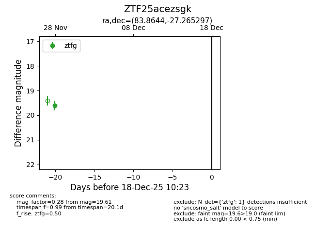
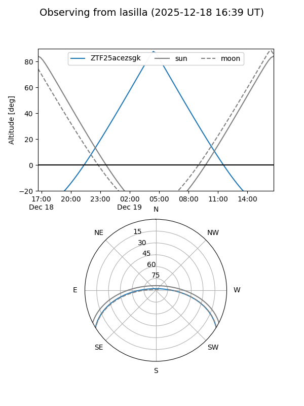
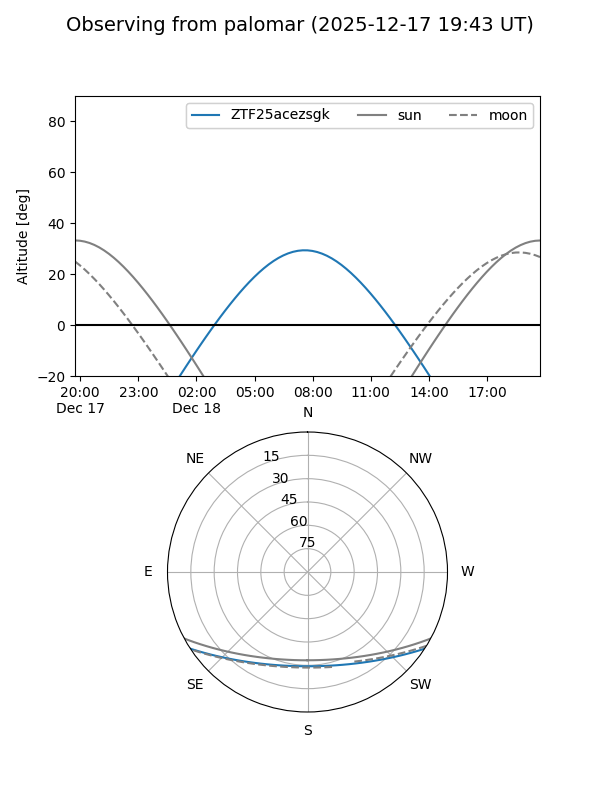

ZTF25acezsgk
Target ZTF25acezsgk at 2025-12-18 11:17
Aliases and brokers:
FINK: fink-portal.org/ZTF25acezsgk
Lasair: lasair-ztf.lsst.ac.uk/objects/ZTF25acezsgk
ALeRCE: alerce.online/object/ZTF25acezsgk
alt names
ZTF25acezsgk (ztf,fink_ztf)
Coordinates:
equatorial (ra, dec) = 83.8644,-27.26530
equatorial (HMS+DMS) = 05:35:27.46,-27:15:55.07
galactic (l, b) = (231.0979,-27.79993)
Photometry
last ztfg=19.61
1 ztfg detections
Lightcurve

Visibility


Additional plots